IT
Valores
Inglés
Inicio
Joy
Brace
A principios de 2025, trabaje en un proyecto llamado
"JoyBrace"
, este fue un emprendimiento de pulseras artesanales. Nuestro objetivo era crear pulseras con diseños únicos que reflejara la personalidad y el estilo de cada cliente.
Asistimos a ferias en el
Polideportivo España
y la
Universidad Don Bosco
. Gracias a nuestros beneficios monetarios, la utilización de redes sociales y un sitio web para promocionar nuestros productos y el uso de dashboards virtuales para manejar nuestras finanzas, fuimos elegidos como los ganadores de este proyecto llamada
¡Supérate! Emprende
.
Aprendizaje
financiero
Este emprendimiento me dejo muchas enseñanzas, fui el encargado de administrar las finanzas, las entradas y salidas de los productos, crear listas de compras y distribuir el dinero entre mis compañeros.
Tecnologías
usadas
Para llevar las finanzas utilizamos un dashboard y se creó un sitio web para promocionar nuestros productos, por eso, se utilizaron muchas herramientas tecnologicas como:
Ventas y
Marketing
En este trabajo, aprendí a conectar con la gente para promocionar nuestros pulseras y como el marketing en redes sociales impacta y genera a nuestro público meta, y ayuda a generas más ventas.
Solar
Search
Shark
Tank
Tuvimos la oportunidad de trabajar con modelado y realidad 3D, que nos permitio crear un producto innovador que implemente tecnología y fue presentado junto a otros proyectos en un Shark Tank en mi segundo año.
Trabajamos con
herramientas
como:

¿Qué hace nuestro
dron
?
Nuestro dron rescatista está enfocado en ser una herramienta útil en momentos de emergencia, salvando vidas y siendo un apoyo para los rescatistas.
Nuestra
Solución
Después de mucha investigación, llegamos a la conclusión junto a mi equipo de trabajo de que nuestro país era susceptible a terremotos u otros tipos de emergencias.
Por eso, creamos una representación de un dron rescatista que facilitaría el trabajo de los rescatistas mediante:
Una app móvil
Dron rescatista a
control remoto
Una página web informativa
Más
Proyectos
#
Say
No
to
Drugs
Creamos un movimiento anti-drogas donde creamos contenido visual y multimedia en redes sociales donde concientizamos e hicimos visible temas tabú como las adicciones a las drogas.
Galería
de los
Sentimientos
Cree una pintura junto a una compañera donde expresamos al miedo como un monstruo que nos alerta del peligro, pero que si no es controlado, es capaz de encerrarnos y no dejarnos avanzar.
T
X1
D
En esta actividad fuimos teachers por un día e impartimos clases sobre el tema "Sinergizar" para demostrar como el trabajo en equipo facilita encontrar soluciones y generar ideas nuevas.

.png)

.png)